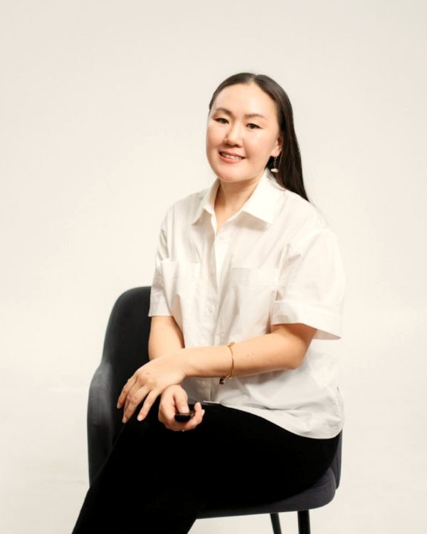
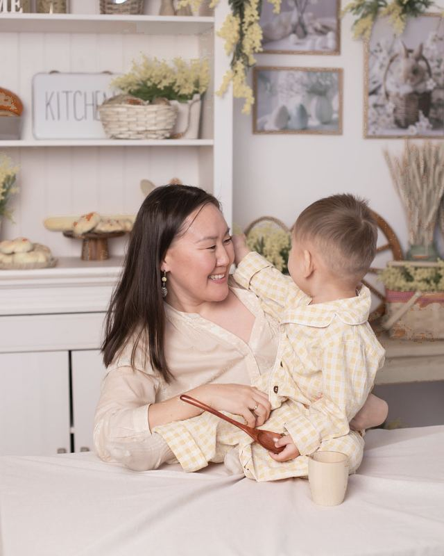

Пространство, где можно выдохнуть
Помогаю взрослым и родителям разобраться в чувствах, снизить тревогу и вернуть опору. Бережно, без осуждения и в вашем темпе.


Психолог, мама, педагог по образованию
Работаю в отделении сопровождаемого проживания «Тренировочная квартира» и веду частную практику. Мне близка тема поддержки: от родительства и перемен до внутренней опоры. Я мама, поэтому хорошо знаю, как непросто бывает совмещать заботу о других и о себе.
Запросы, с которыми приходят
Тревога и стресс
Научимся замечать напряжение и возвращать себе спокойствие.
Родительство
Выгорание, чувство вины, отношения с ребёнком и в паре.
Жизненные перемены
Смена работы, роли, города, поиск своего направления.
Самооценка
Опора на себя и границы в отношениях.
Что вам сейчас важнее всего?
Пять вопросов без регистрации. Ответы нигде не сохраняются. Это не диагностика, а повод задуматься.
Три простых шага
Вы пишете
Коротко расскажите, с чем хотите прийти. Подробности не нужны.
Знакомимся
Обсудим запрос, формат (очно или онлайн) и удобное время.
Работаем
Встречи в вашем темпе, бережно и конфиденциально.
Форматы и стоимость
Индивидуальная консультация
За один сеанс. Очно в Якутске или онлайн. Точный формат и расписание обсудим при знакомстве.
ЗаписатьсяНа чём строится наша работа
Конфиденциальность
Всё, что обсуждается на встречах, остаётся между нами.
Без осуждения
Можно говорить о том, о чём страшно или неловко.
Ваш темп
Идём так быстро, как вам комфортно, и вместе ставим цели.
Уважение к границам
Вы решаете, о чём говорить и что менять в своей жизни.
Образование и опыт
- СВФУ
Магистр, психолого-педагогическое образование
- Дополнительно
Учитель английского (красный диплом) и экономист: финансы и кредит
- Сбербанк
Работа с клиентами и командой
- Предпринимательство
ИП: работа с людьми, организация и проведение клубов, поездок и мероприятий
- Сейчас
Психолог, «Тренировочная квартира»
ГБУ РС(Я) «РКЦСО», Якутск. Помогаю участникам программы с ментальными особенностями развивать навыки самостоятельной жизни и поддерживаю их на этом пути. Параллельно веду частную практику.
Частые вопросы
Как проходит первая встреча?
Знакомимся, обсуждаем ваш запрос и договариваемся о формате. Никаких обязательств.
Это конфиденциально?
Да. Всё, что обсуждается на встречах, остаётся между нами.
Можно онлайн?
Да, встречи проходят в Якутске и онлайн.
Сделайте первый шаг
Напишите мне, и мы подберём удобное время.